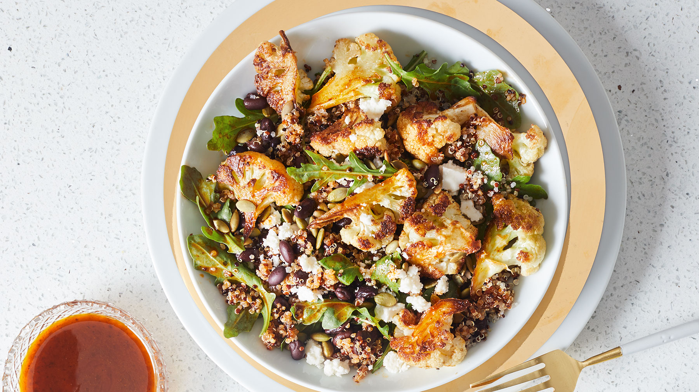

Terrie's Protein Recipes

By now you've probably heard that protein is an important nutrient to eat every day. Putting a few high-protein dinners on your weekly menu is one great way to help make getting enough daily intake a little easier, no matter what else the day throws at you.
Here are a list of our favourite dishes to help you get started on the Protein Based Diet journey
Spicy Shrimp Spinach Caesar SaladHomemade spicy Caesar dressing is the star of this salad—though the baked shrimp isn't too bad itself, either.
Easy Salmon Piccatta
If you already love chicken piccata—the briny, lemony, caper-packed Italian favorite—you'll be obsessed with this speedy salmon version.
Cheesy Chicken Enchilada Pasta
Who knew two perfect foods (enchiladas and pasta) could come together to make something even better? It's creamy. It's cheesy. It's full of protein.